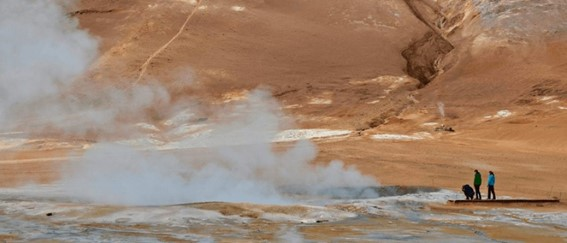

Geotermica
A energia geotérmica é a energia calorífica oriunda da terra.
Ela é gerada através do calor que vem de baixo superfície da terra, chamada magma calor do interior da Terra, portanto é renovável, e é uma alternativa aos combustíveis fósseis para gerar energia elétrica

Imagem retirada do site:
https://esferaenergia.com.br/wp-content/uploads/elementor/thumbs/o-que-%C3%A9-energia-geot%C3%A9rmica-1024x457-1-p4ltgktwmx2m3l0tyec3mx1iz8em8pf98ek71ppg3k.jpg
Vantagens
- Fonte renovável de energia;
- Baixo impacto ambiental;
- Não sofre com as oscilações climáticas;
Desvantagens
- Especificidade dos locais nos quais as usinas geotérmicas podem operar;
- Emissão de gás sulfídrico (H2S);
- Possibilidade de contaminação de lagos e rios;